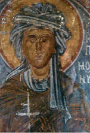
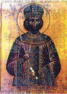
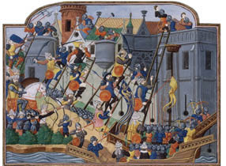
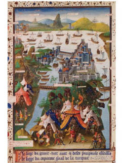
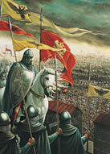
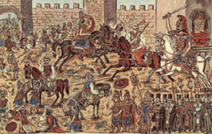
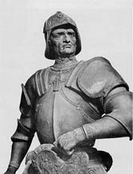

Son İmparator
Kaderin cilvesine bakınız ki; Doğu Roma’nın ilk imparatoru ile son imparatorunun adı Konstantin olup her ikisinin de anneleri, aynı adı taşıyordu: Helena!
Roma demek olan dünya imparatorluğunun yeni payitahtı Nova Roma’yı 330 yılında kuran ve “Büyük Konstantin” diye anılan İmparator Birinci Konstantin ile çok değer verdiği annesi İmparatoriçe Helena, Hıristiyanlığın resmî “aziz”leri arasına kabul edilmişlerdi.
Kurucusunun ölümünden sonra Konstantinopolis adını alan o payitahtı, 1453 yılında Osmanlı’ya karşı savunurken ölen On Birinci Konstantin Palailogos’un ise cenazesi bile bulunamadı, mezarı da olamadı. İmparatoriçe annesi Helena ise Rum ve Sırp Ortodokslar tarafından “Azize Sabır” olarak kutsanır; 1450 yılının Mart ayında ölmüş olmasına karşın, Konstantinopolis’in Hıristiyan âlemince yitirildiği 29 Mayıs’ta anılır.
Doğu Roma İmparatorluğu başkentinin Osmanlı Sultanı İkinci Mehmet’in orduları tarafından fethi, o günden bugüne Batı Avrupa’da “Konstantinopolis’in düşüşü” olarak söylenir. Muzaffer Sultan İkinci Mehmet’i, bu fetihle kazandığı “Fatih” ünvanıyla anan tarih kaynaklarının hiçbirinde Konstantinopolis’in el ve sahip değiştirmesinden, “Osmanlı fethi” diye söz edilmemesi, hayli ilginçtir.
“İstanbul’un fethi” adeta Türklere özgü, salt Türkçe söylenen bir tamlama. Belki eski Osmanlı topraklarında ya da İslam ülkelerinde de kullanılıyor olabilir, araştırmadım. Ama Batı dillerinde böyle bir adlandırmanın var olmadığı kesin.
Sultan Mehmet, gençliğine karşın çok iyi yetişmiş, hem siyasal hem de askerî anlamda üstün nitelikli bir hükümdar olmakla kalmayıp zamanın önünde giden ilerici ve aydın bir kişilikti.
Batılı kaynaklara göre annesi büyük olasılıkla Hıristiyan köken-

Helena Dragas /Azize Sabır, Yunanistan

Son imparator Konstantin Palailogos
li bir cariye olan Fatih; tahta çıktığında 18 yaşındaydı ve Türkçe, Arapça, Rumca, Farsça ile İbranice’yi aynı akıcılıkla yazıp konuştuğu söylenirdi.
Bilineni tekrarlamama herhalde gerek yok: Genç Sultan İkinci Mehmet’in son derece zekice hazırladığı kuşatma taktiği, ateş gücü ve donanımlı Osmanlı ordusu karşısında, Hıristiyan Doğu Roma’nın son kalesi, kadim başkenti Konstantinopolis’in hiç şansı yoktu.
Payitahtın 1204 yılındaki Latin işgali ve talandan sonra asla toparlanamayan Doğu Roma topraklarını fetihte, Selçukluların başladığını Osmanlı Devleti bitirmiş; 1453 yılında kuşatılan Konstantinopolis, mülkü surların çevirdiği günümüz “tarihî yarımada”sından ibaret imparatorluğun, son kalıntısıydı.
Zaten Dördüncü Haçlı Seferi’nden öteye, deyim yerindeyse “suçüstü” ayrışan Latinler ile Ortodokslar arasındaki husumet hiç bitmediği içindir ki Hıristiyanlığın kadim başkenti ve son Roma İmparatoru, Osmanlı ordusu önünde Avrupa devletleri tarafından yalnız bırakılmıştır.
Oysa kentin Haçlı işgali ve Latin talanı üzerinden geçen iki yüzyıllık süreçte, Hıristiyanlığın iki kutbu arasında yakınlaşma çabaları yok değildir.

Konstantinopolis Kuşatması/Fransız Millî Kütüphanesi
Ne var ki son toplamda, artık Ortodoks ve Katolik diye ayrışan iki Hıristiyan cemaat arasında yüzyıllardır bitmeyen, hatta eskidikçe yakıcı bir kine dönüşen husumet; ruhban sınıfları arasındaki teorik yakınlaşmanın toplumsal alanda pratiğe yansımasını engellemiştir.
Konstantinopolis’in Osmanlı tarafından alınacağı artık belli olduğunda, İmparator Konstantin Palailogos ve Doğu Romalı din adamlarının Batı Roma’ya yaptığı acıklı yardım çağrıları, Papa Beşinci Nicolas tarafından olumlu karşılanmasına rağmen, Avrupalı hükümdarlar nezdinde yanıtsız kaldı.
Konstantinopolis’in ayrıcalıklı müttefiki, Galata’da ticaret kolonisi olan Ceneviz, İmparator Konstantin Palailogos’un askerî yardım isteğini, Papa’nın aracılığına rağmen reddetti.
Yardım sözü veren Venedik Cumhuriyeti ise 1453 Ocak ayında, Haliç’e savaş gemileri ve 400 asker gönderdi. Ancak Venedikliler, Fatih’in kuşatma gücünü görünce savaşın kaybedilmesinin kaçınılmaz olduğunu anlamakta gecikmediler. Ve 26 Şubat gecesi, kentten kaçmak isteyen birkaç yüz İtalyan’ı da gemilerine bindirip sessizce ayrıldılar Haliç’ten.
Osmanlı kuşatması, Şahi toplarının ilk ateşleriyle 6 Nisan’da başlamıştı.
20 Nisan 1453’te, Papa’nın kendi parasıyla yiyecek ve mühimmat doldurup silahlandırdığı üç Ceneviz savaş gemisi, Konstantinopolis’e vardı. Özerk Galata bölgesindeki Ceneviz kolonisi ile Ceneviz’den gönüllü gelen genç şövalyeler de Doğu Roma’nın kutsal başkentini Osmanlı’ya karşı savunmaya hazırdı. Genç gönüllülerin başında, Ceneviz soylusu ve kuşatma muharebesi uzmanı Giovanni Giustiniani Longo vardı. Ceneviz Devleti İmparator Konstantin Palailogos’un imdadına koşmayı reddettiğinden, komutan Longo, 400 Ceneviz askeri ve Ege adalarından topladığı 300 Yunanlı savaşçı ile iki gemilik ordusunu kendi parasıyla oluşturmuştu.
Fatih Sultan Mehmet, 29 Mayıs’ta, Konstantinopolis’in fethiyle sonuçlanacak savaş için tarihin en büyük ordusunu değil ama silahları, tekniği ve stratejisi açısından o güne değin görülmemiş modernlikte bir vurucu güç toplamıştı. Yüz bin kişilik ordusu, 80 bin düzenli askerin yanı sıra 20 bin başıbozuktan oluşuyordu. Kuşatmadan bir

Konstantinopolis’in Düşüşü/Bertrand de La Broquière
yıl önce Macar asıllı Mühendis Urban’a “Şahi Topları” diye anılan zamanın en büyük, en ağır ve en etkili iki topunu döktürmüştü. 22 Nisan’da karadan Haliç’e indirdiği Osmanlı donanması, 70 gemiden oluşuyordu.
İmparator Konstantinos Palailogos’un bizzat katılıp, cesaretle vuruşarak öleceği savaşta, Konstantinopolis’in savunma gücü ise son toplamda şöyleydi: Denizde, Haliç’e demirli 8 Venedik, 5 Ceneviz, 1 Ankona, 1 Katalunya, 1 Provence kadırgası ile Doğu Roma donanmasından geriye kalan 10 savaş gemisi vardı. Karada, durum daha da içler acısıydı. Surların savunmasını asker olsun, sivil olsun üstlenen ahali, saray erkânı ve ruhbanlar dahil 4 bin 983 Rum ile 2 binden az yabancı gönüllüden oluşuyordu. Başka bir deyişle, 22 kilometrelik surları, hepi topu 7 bin kişiyle korumaya çalışıyorlardı.
Bizim tarih kitaplarımız, Konstantinopolis’in fethini, sanki yenilmez ordulara karşı kazanılmış muazzam bir zafer olarak anlatır. Elbette muazzam bir zafer, çağ kapatıp çağ açan bir olgudur; Doğu İmparatorluğu’nun pul kadar kalan son kalesi ve başkentinin Osmanlı tarafından alınması.
Ama zaferin büyüklüğü, hasmın karşı koyma gücünü abartmaktan geçmez, geçmemelidir!
Fatih Sultan Mehmet’in hem üstün komuta zekâsı hem de olağanüstü donanımlı 100 bin kişilik ordusuna ve Urban’ın dev toplarına karşı bir aydan fazla direnebilen; Konstantinopolis’i umutsuzca savunan 7 bin kişinin de hakkını vermek, cesaret ve kahramanlık gösterdiklerini kabul etmek gerekir.
Örneğin, kendi cebinden ödediği 700 asker ve 2 gemiyle Konstantinopolis’in savunmasına gönüllü katılan Ceneviz şövalyesi Giovanni Giustiniani Longo, korumak için savaştığı surlarda bir destan yazmıştır. Öyle ki, Longo bir Osmanlı okuyla ölümcül yaralanıp askerleri tarafından bindirildiği gemiyle tahliye edilince savaşın kaderinin değiştiği ve geride kalanların yenilgiyi kabullendiği söylenir. Ağır yaralı Longo, vatanı Cenova’yı bir daha görememiş, yolda ölmüştür.
Keza İmparator Konstantin Palailogos, bütün emperyal simgelerini çıkarmış, rütbelerini sökmüş; başkentini savunanların arasına karışarak iç surlarda sıradan bir asker gibi dövüşmüş ve 29 Mayıs fetih günü, askerleriyle birlikte öldürülmüştür.

Son İmparator

Konstantin Palailogos/Ressam: Teofilos Hacımihail, 1932
Cesedinin ne olduğu, nereye gömüldüğüne ilişkin söylentilerden biri, Osmanlı askerleri tarafından mor çizmelerine işli emperyal simgeden tanındığıdır. Ama John Julius Norwich’e göre bu doğru olsaydı, Fatih Sultan Mehmet yenik imparatora mutlaka saygı gösterir ve kendisine uygun bir mezar yaptırırdı. En yüksek olasılık, kuşkusuz Konstantin’in askerleriyle birlikte, bir toplu mezara gömüldüğüdür.

Giovanni Giustiani Longo/Cenevizli General